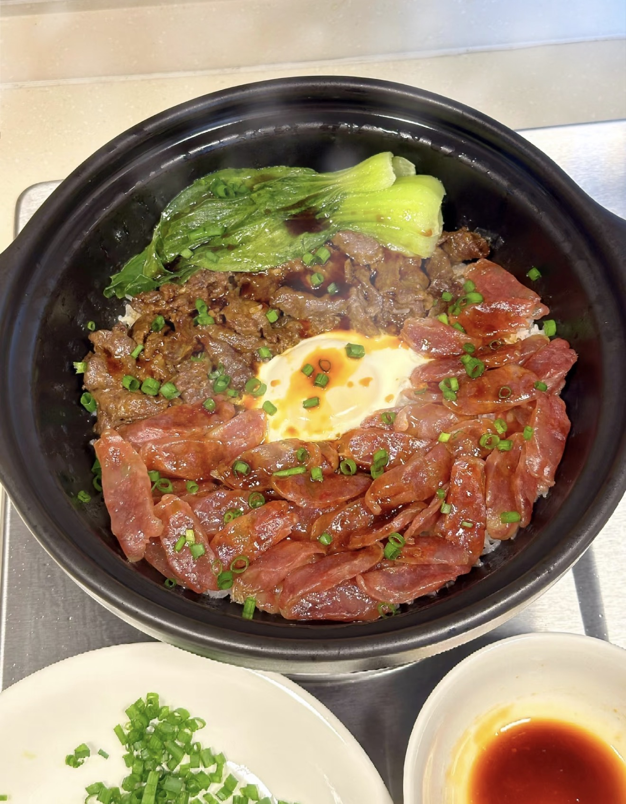

Chinese Sausage Claypot Rice
腊味煲仔饭 — Fragrant claypot rice with Chinese sausage, cured pork, and a soft egg.
Ingredients
- Rice (soaked 30 minutes)
- Chinese sausage (lap cheong)
- Cured pork (lap yuk)
- Egg
- Vegetables (bok choy or greens)
- Ginger (shredded)
- Scallions
- Soy sauce
- Dark soy sauce
- Oyster sauce
- Sesame oil
- Sugar
Directions
- Wash rice and soak for 30 minutes.
- Add rice and water (ratio ~1:1.5) into a clay pot.
- Cook on high heat until boiling, then reduce to low.
- When small holes appear on the surface, add sausage, cured pork, and ginger.
- Crack an egg in the center.
- Cover and cook on low heat for 5–8 minutes.
- Mix soy sauce, dark soy sauce, oyster sauce, sesame oil, and sugar.
- Pour sauce over the rice.
- Add cooked vegetables and scallions.
- Serve immediately while hot.